Designing clarity into a wellness platform built for long-term behavior change

The Challenge
“How do we make a dense, data-heavy app feel clear enough that someone opens it on day 14, not just day 1?”
Pro2col is a personalized wellness platform: part health assessment, part daily tracker, part coaching plan. The business wanted customers to stay engaged with their nutrition plan by seeing their health results day by day, not only in the mirror. The design challenge was keeping an app with this much depth light enough to come back to every day.
The real competitor is the delete button.
We opened the client workshop with the market numbers. Most health apps lose people in the first week, so every decision in Pro2col had to answer one question: does this give someone a reason to open the app again tomorrow?
Market data presented at the workshop. Sources: BuildFire, RevenueCat, Sensor Tower, Statista.
What we had to work within.
A large, shared product
Ten designers working on one app. Every module had to feel like part of the same experience.
Reuse before reinventing
New patterns cost development time, so solutions had to use components the system already had.
Two opposite users
Beginners who want clarity and power users who want depth, in the same screens.
Two users pulling in opposite directions.
The research team ran 10 interviews with coaches, and we turned them into behavioral personas to ground the design in real tension, not assumptions. Two of them shaped the surfaces I worked on most — and the conflict between them became the central design problem.
The Skeptic
Wants → ClarityNew to wellness apps, time-poor, allergic to clutter. Skims onboarding, abandons anything that feels long or rigid, responds to small early wins. If the first screen feels heavy, this user is gone.
The Optimizer
Wants → DepthExperienced and data-fluent. Wants detailed insights, weekly analytics, data that evolves with them. Easily frustrated by an app that feels shallow or treats them like a beginner.
Three directions, one product.
With the team and design leadership, we took three visual directions to a two-day workshop with the client. Daily Immersion put each data point front and center. Fluid Focus built the experience around a single goal. Modular Depth laid everything out as a dashboard to glance at or dive into.
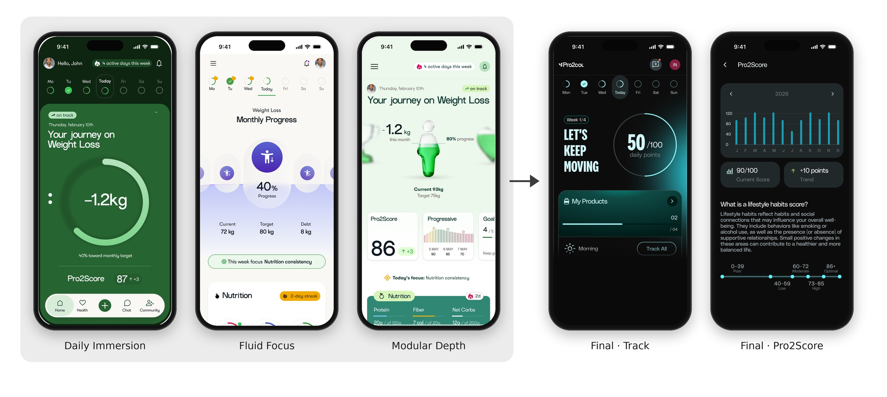
The final app kept Daily Immersion's card-by-card daily feed and the energy of its score, and borrowed Modular Depth's glance-then-dive pattern for Pro2Score and Insights.
Guidance before data.
Before designing my modules, I benchmarked Noom, Strava, Nike Run Club and Fitbit. Most of them treat guidance as a chat or a lesson that lives apart from daily tracking. I wrote the principles below to keep Pro2col on the other side of that line, and used them to review every screen I designed.
Guidance before data
The home is a daily guidance hub, not a control panel. It shows what matters now, what is going well and what to adjust today, instead of every metric the app tracks.
Daily actions over passive tracking
Every card ends in one clear next step, like Track All or a single add button, so the screen asks for a small action instead of only reporting numbers.
Act here, learn there
Explanations live one level down. The home stays for action, and pages like Pro2Score carry the context: what the score means and where you sit on the scale.
A health assessment, not an endurance challenge.
The plan only works if people finish the assessment, and the original felt like a test of stamina: 32 required questions, many with custom sliders. In this phase we could not remove or reword questions, because the legal and science teams own them. So the team focused on how answering feels, and proposed 16 changes across 5 categories: structure, interaction and input, language, returning users and completion.
Current state — 32 questions, slider-based inputs
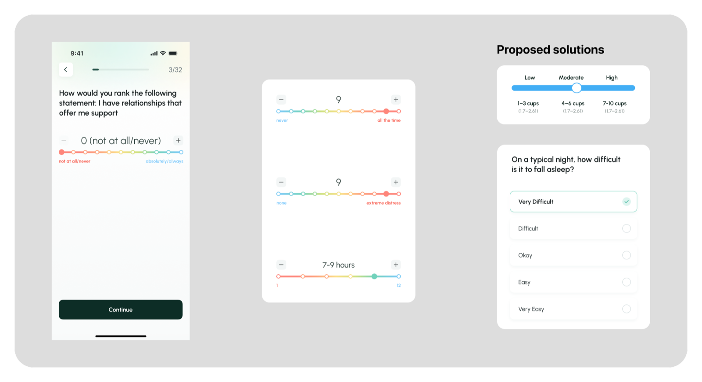
The rainbow slider competes with the stepper (+/−) for the same action — redundant signals for a choice that's already discrete. The color spectrum adds cognitive load, not clarity, and points sit too close to the buttons, making mis-taps easy.
Many questions reuse the same slider pattern while changing what the scale means — intensity vs. frequency vs. duration. Users re-interpret the scale on every screen, adding load during sensitive, self-reported questions (sleep, anxiety).
Standardize subjective measures with multiple-choice inputs and consistent anchors (None / Sometimes / Often, or Low / Moderate / High). Less cognitive load, no redundant sliders, clearer and more reliable responses — data integrity intact, and the assessment feels supportive, not taxing.
Solution — simplified, multiple-choice, consistent anchors
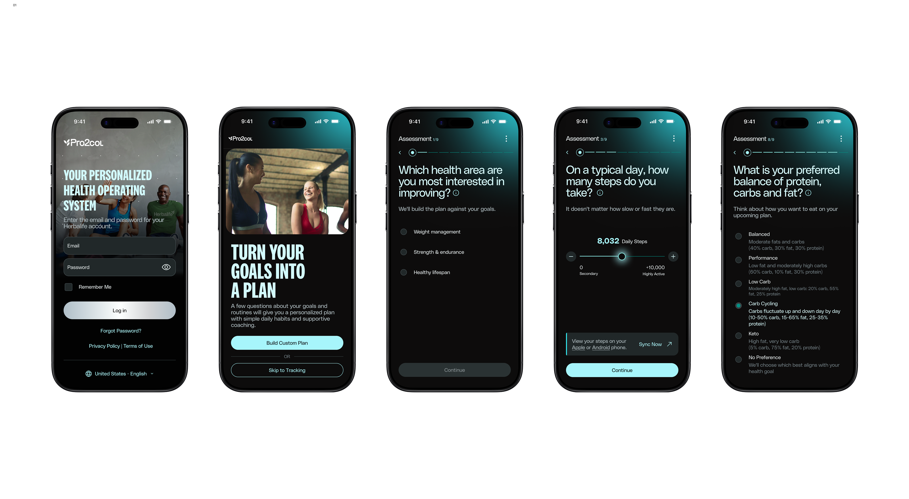
One screen, four questions answered.
The daily dashboard had to answer where am I right now, what needs attention, how am I progressing, and what should I prioritize today — without turning into a wall of cards. Each module (nutrition, hydration, eating window, steps, exercise, lifestyle hacks) is scannable at a glance and expandable on demand.
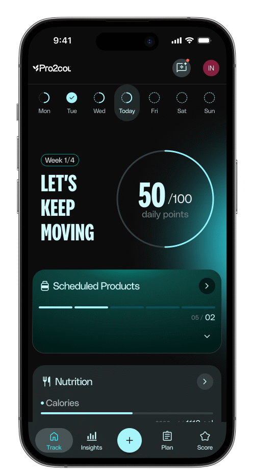
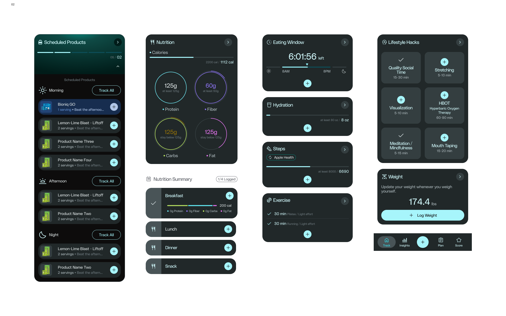
Progress, not just numbers.
Raw metrics don't motivate — context does. Weekly and monthly views surface trend direction and contextual summaries instead of dumping charts on the user, so progress is something you can feel, not just read.
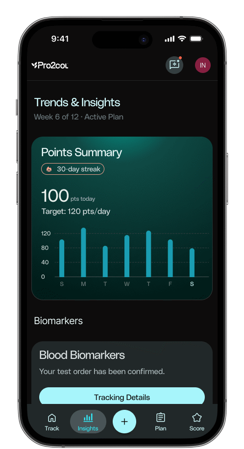
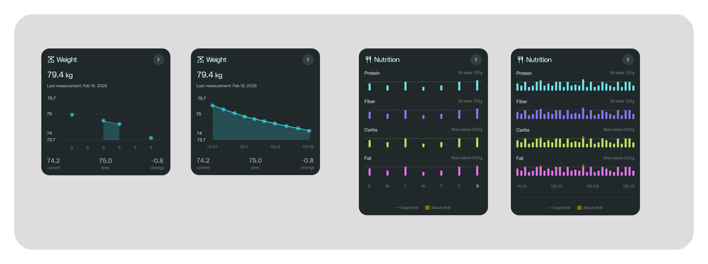
Data turned into a narrative.
Pro2Score and Pro2Age translate a wall of assessment answers into two numbers someone can actually hold onto — paired with a plan that adapts as goals are completed, instead of a static PDF handed off once.
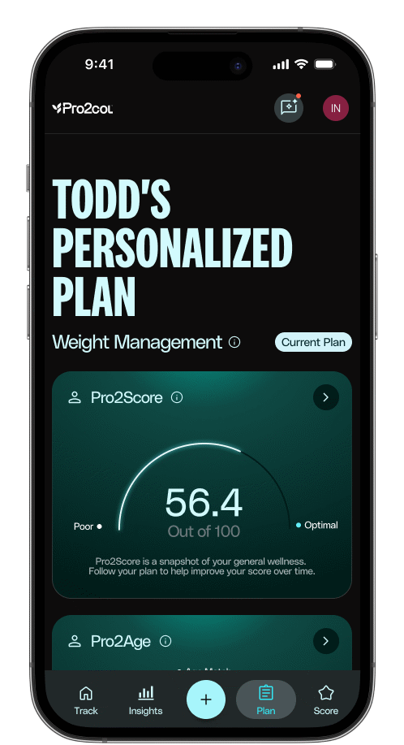
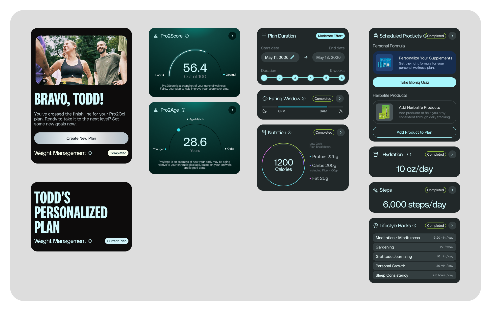
Modular surfaces that stay connected.
Nutrition, hydration, movement and more each get their own detailed view — logging a meal or a workout never feels disconnected from the daily summary it feeds into.
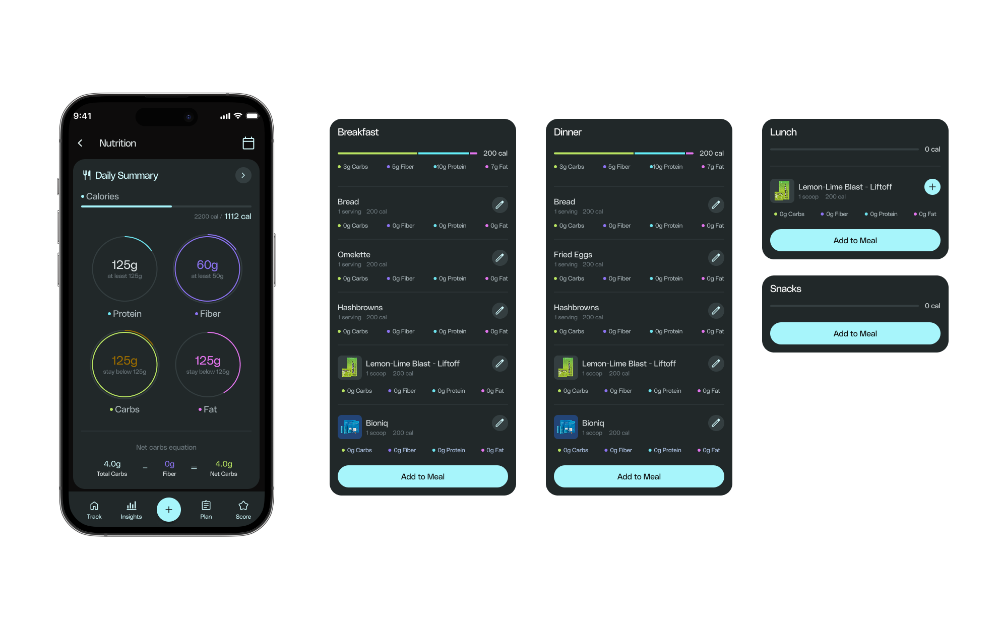
Logging shouldn't be the hard part.
A single centralized "+" action handles the most frequent tasks — search, snap a photo, or scan — so logging a meal or a habit takes seconds, not a trip through several menus.
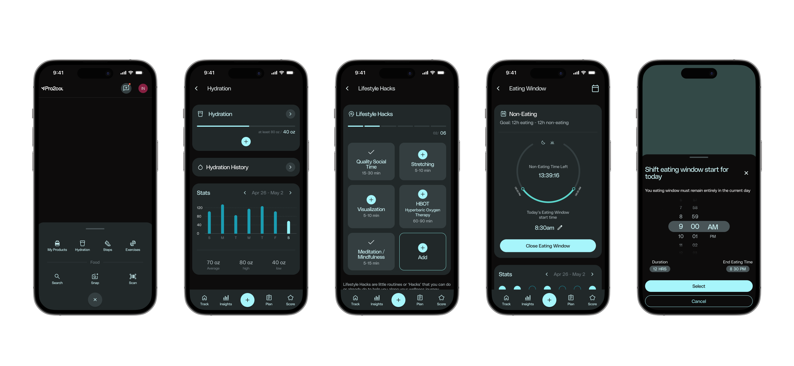
Clinical data, made legible.
Lab results are usually a spreadsheet of unfamiliar terms. Here, each biomarker gets a plain-language explanation, a visual in-range indicator, and a trend line — turning clinical data into something a non-clinician can actually act on.
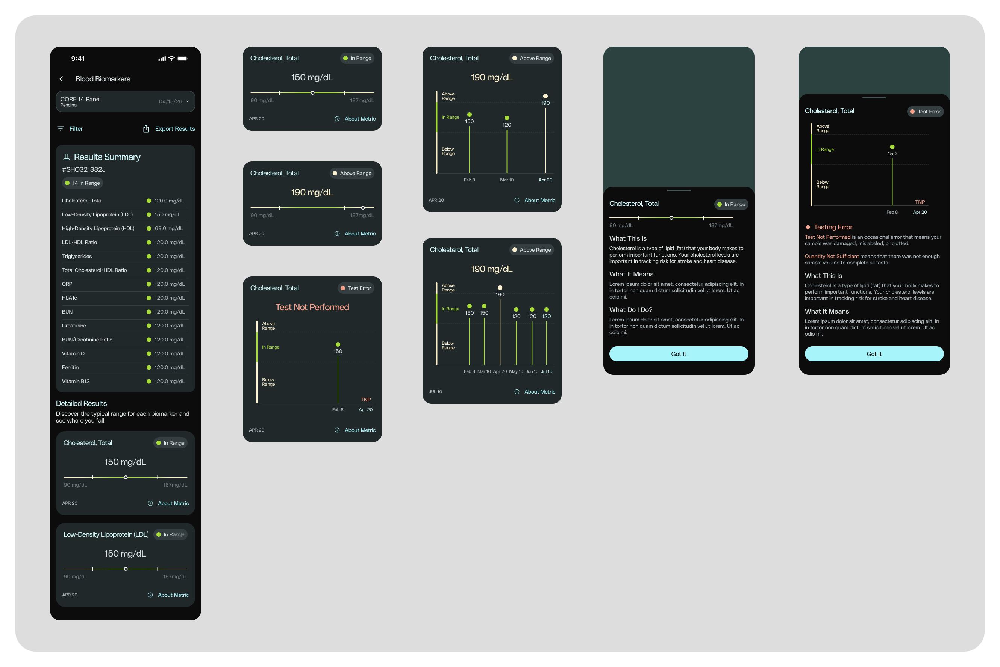
What changed along the way.
Two decisions came from trade-offs with the client rather than from the first idea.
Pop-ups for secondary content
Pop-ups would have meant building new components. The client saw the extra development time and preferred to move faster.
Drawers already in the system
We reused the drawers the app already had. Same job, no new engineering, and a more consistent experience.
Light and dark versions
Client feedback led us to design both light and dark themes for the app.
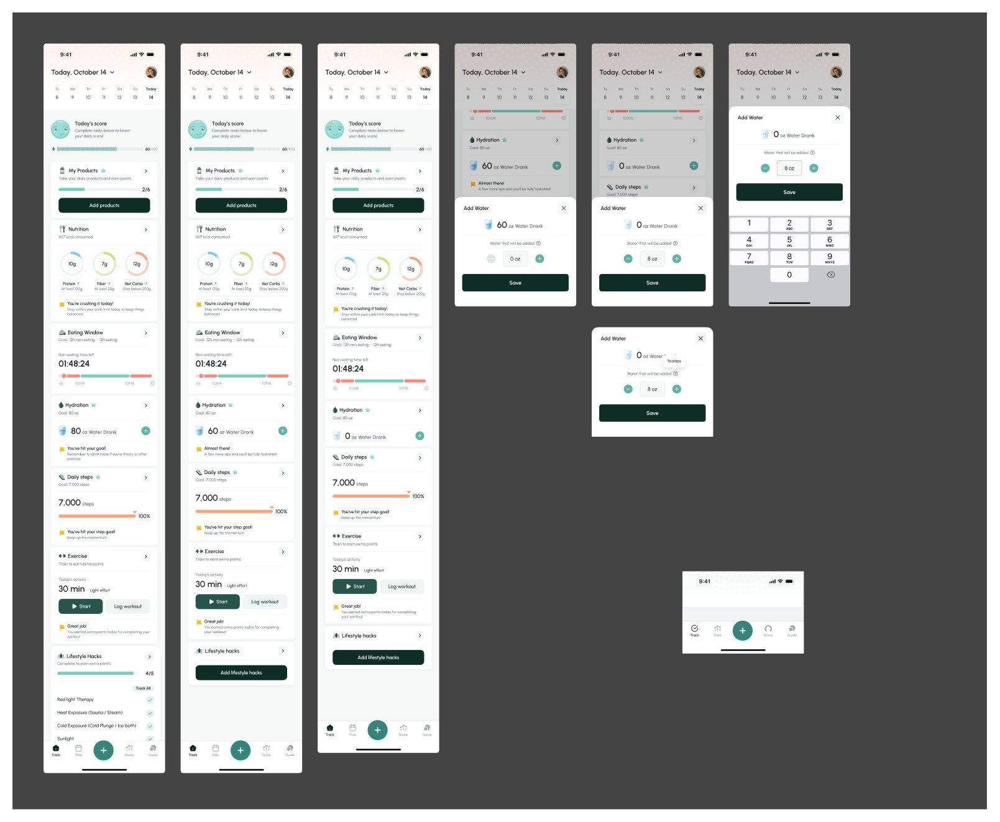
Earlier version of my Track screen: logging water through pop-ups, before we moved to the drawers already in the system.
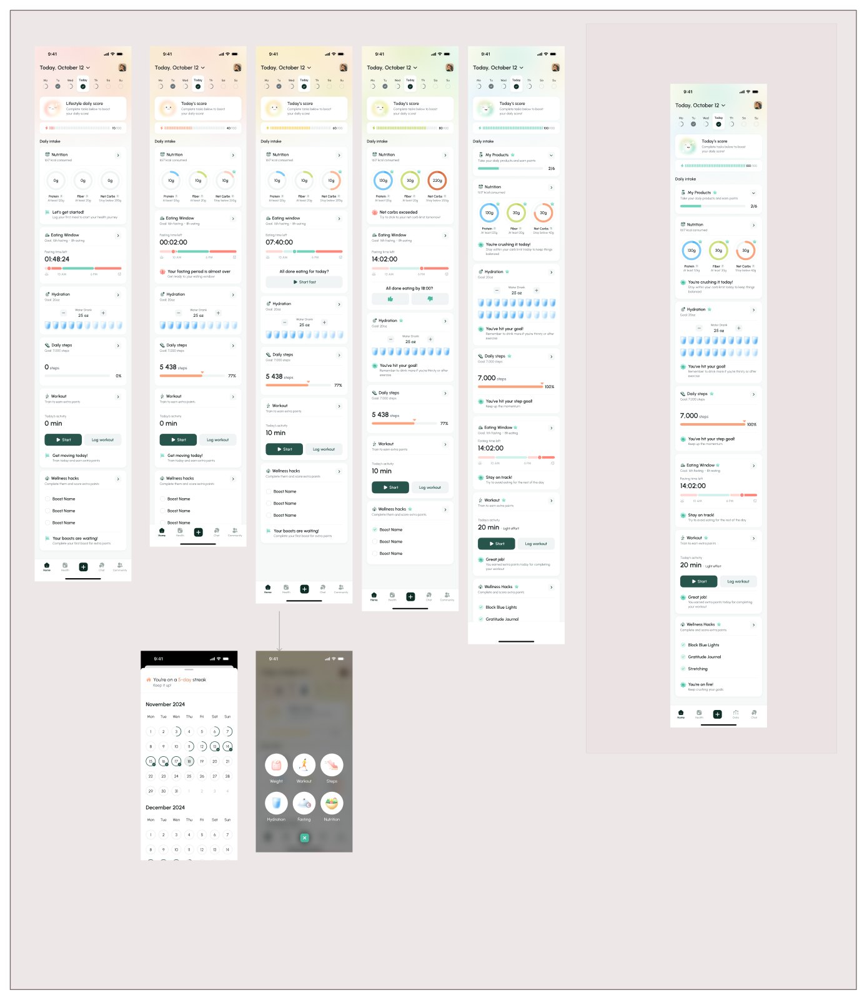
Home states as the daily score grows from 10 to 100 points, so progress is visible from the first log.
Closing the gap between Figma and the build.
I ran design QA on the development version of the app. I went through the build screen by screen, compared it with the specs and logged every issue the developers needed to fix, from spacing and states to broken flows, so what ships matches what we designed.
In development, launching in February 2027.
The app is being built by the client's engineering team, so there is no usage data yet. What I would do differently: push the client earlier to define scope, especially in areas where they did not yet know what they needed.
Restraint was the real design decision — deciding what not to show mattered more than what we added.


Let's talk about
your next hire.
danierocruz@gmail.com
Usually respond within 24h · Open to relocation and remote roles.